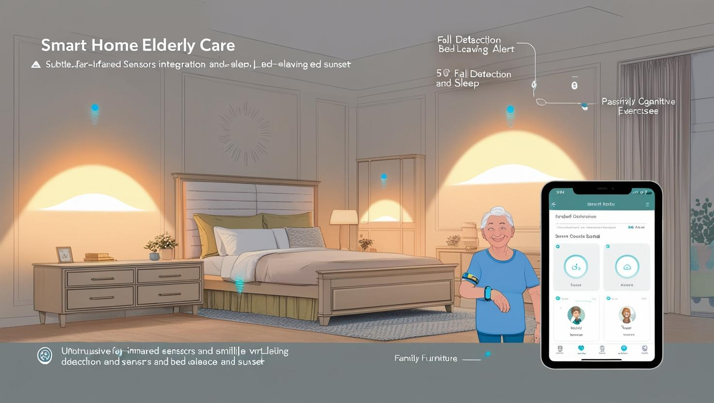

記憶雖模糊，愛依然清晰
歡迎來到「記憶花園」——一個為失智長輩、家屬與照護者，共同打造充滿尊嚴、互動與溫暖的友善家園。
開始同理心體驗關於我們：為何創建記憶花園？
「大家好，我是小文。看著台灣社會快速邁入超高齡，失智人口逐年攀升，我深感傳統照護模式的不足。許多長輩在機構中，僅能獲得基礎醫療，卻失去了生活的色彩、人際的溫暖與應有的尊嚴。」
這不只是冰冷的統計數字，而是「每一個家庭」可能面臨的真實困境，天天都在上演。家屬們常說：「我好想陪伴他，卻力不從心。」這份沉重，驅使我和一群跨領域的夥伴，決心動手創新。
「記憶花園」因此誕生。我們相信，即使記憶會逐漸模糊，愛與關懷的力量依然清晰。我們的使命是打造一個結合創新科技、友善環境設計與緊密社區參與的示範性失智村，讓長輩們能重拾笑容與生活的意義，同時也為辛勞的照護者提供支持與喘息的空間。
同理心體驗：走進他們的日常片段
以下互動是為了幫助您初步理解失智者在日常生活中可能遇到的挑戰。這無法完全複製真實感受，但希望能喚起您更多的同理與關懷。若感不適，請隨時停止。
模組一：視覺的迷霧
當熟悉的世界變得模糊，辨認物品與方向都可能成為挑戰。試試看，下方的圖片您能清楚辨識嗎？
模組二：記憶的片段
短期記憶的流逝，是失智長輩常面臨的困難。現在，來挑戰一下您的瞬間記憶力吧！
模組三：話語的迷宮
「話到嘴邊卻忘了詞」，這是失智者在語言表達上可能遇到的困難。試著幫忙完成這句話：
我想喝一杯溫熱的 ______。
模組四：空間的困惑
「這裡是哪裡？我該往哪走？」定向感困難常讓長輩感到不安。下圖是記憶花園的簡易平面圖，試著找出「休憩花園」在哪裡。
請點擊圖中您認為是「休憩花園 (C區)」的位置。
我們的行動：打造失智友善的「記憶花園」
面對挑戰，我們以 SMART 原則擘劃「記憶花園—文山失智村實驗示範計畫」：
- Specific (明確具體)：於文山區打造佔地約兩千坪的「記憶花園」，包含高採光智慧建築、直覺圖像指引，並營造共生互助氛圍。
- Measurable (可衡量)：追求被照護者/照護者滿意度 ≥ 85%、長者健康指標改善 ≥ 10%、園區事故率 ≤ 1% 等具體指標。
- Achievable (可達到)：透過小規模試辦、公私部門合作募款 (目標300萬)、結合AI科技輔具減輕人力負擔。
- Relevant (相關性)：回應超高齡社會壓力，符合SDGs永續發展目標，促進多方利害關係人福祉。
- Time-bound (有時限)：計畫為期18個月至2年，分階段執行、評估與優化。
核心做法：
1. AI科技與智慧輔具
- 安裝智能燈光調節系統，模擬自然光照變化，穩定長輩作息。
- 導入遠紅外線防跌偵測、離床警示系統，即時保障長輩的居住安全。
- 運用穿戴式裝置追蹤活動量、睡眠品質與重要生理數據，提供個人化照護參考。
- 開發簡易互動認知訓練App，結合平板電腦，讓長輩在遊戲中活化大腦，並方便家屬線上關懷互動。 
2. 友善空間與環境設計
我們深信環境是重要的療癒因子。因此，「記憶花園」的每一處空間都經過精心設計，旨在提供安全、舒適、且能激發感官與認知功能的友善環境。其中包含多個精心規劃的特色活動區域：

3. 社區共生與參與
- 積極招募並培訓大專院校學生與社區熱心人士成為「記憶花園友善志工」，提供長輩陪伴、活動協助與情感支持。
- 定期舉辦「故事分享市集」、「主題手作坊」、「節慶同樂會」等開放性社區活動，促進長輩與社區居民的自然互動，消弭社會孤立感。
- 與在地學校（如護理、社工、設計科系）、社福機構、醫療院所建立緊密的合作網絡，共享專業資源，推動跨代共融。
- 為家屬開設常態性的支持團體、照護技巧工作坊與喘息服務資訊轉介，成為他們堅實的後盾。
成果與故事：看見改變的發生
- 入住長輩整體滿意度達到 92%。
- 長輩的平均每日活動量提升 12%，部分長輩血壓獲得改善。
- 園區意外事故率控制在 0.8% 以下。
- 社群平台追蹤人數超過 200人，獲得廣泛關注。
溫暖的迴響：
「最讓我難忘的是王阿嬤剛來的時候，眼神總是有些迷茫和不安。有一天，她在志工的陪伴下在花園散步，輕輕摸著盛開的茉莉花，低聲說：『這裡好像我的家……好香。』那一刻，她的眼神變得非常柔和，嘴角也微微上揚。我知道，我們不只提供了一個安全的住所，更給了她一份『家』的溫暖與歸屬感。」—— 照護團隊 小李
「我媽媽以前在家裡不太願意動，也不太說話。來到記憶花園後，她開始參加園藝活動，每天都期待去澆花、看看她種的番茄。臉上的笑容變多了，也比較會主動跟人打招呼。真的很感謝這裡的團隊。」—— 家屬 陳小姐
支持我們：一同播種溫暖與希望
「記憶花園」的每一步成長，都需要您的參與和支持。無論是一份小額捐款、一段寶貴的志工時間，或是一次創新的合作提案，都能為失智長輩和他們的家庭帶來巨大的改變。
若有企業合作或資源贊助意願，歡迎與我們聯繫。